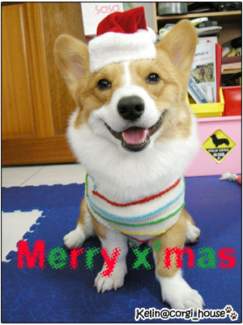
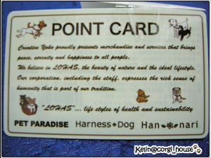
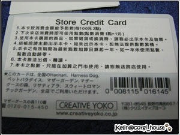
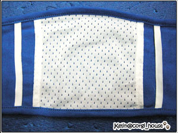
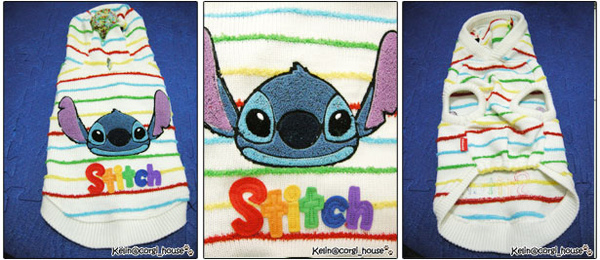
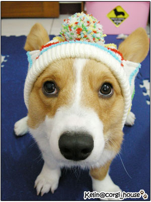

今天是聖誕節先來附上一張聖誕阿卡的照片祝福大家

摩卡卡現在是九個多月大的小男生嘍!!
所以也開始有作記號的本能
我真的很懷疑狗子的膀胱有多大啊? 出門散步尿不停耶!! 硬擠也是可以擠出那1.2滴!
好厲害歐!!!
而且他在家都會憋尿~一整天都不去廁所尿尿! 都在偷偷等出門散步
當然不是每天都可以出去啦!!麻麻沒有那嘛勤勞吶! 哈哈哈
but散步尿尿是沒差啦!!不過有時候去室內或者是朋友的家裡~這個行為就很不優了!!
所以這陣子都在找好看適合的"禮貌帶"
看了很久品質好一點的價格大概在$490左右~也有看到$700-$800的(好貴歐!!)
好不容易挑到喜歡的~居然又沒有適合的尺寸!!! 每一件都好小歐!!
每一件都好小歐!!
昨天剛好拿到PET PARADISE $1500的點數~就直接在那消費啦!!
這是他們的集點卡!! 
   我們挑了跟衣服一樣是史迪奇圖案的禮貌帶，S號的長度還只是剛好而以
我們挑了跟衣服一樣是史迪奇圖案的禮貌帶，S號的長度還只是剛好而以
胖了~GG就罩不住了吧!哈哈 不過它有一點點的彈性~棉的材質才不會讓皮膚摩擦紅紅不舒服！
這是背面~可 以把護墊or 產乳墊黏在裡面
而且他們的居然還比我找的便宜一點點 $450  怎嘛會醬?
怎嘛會醬?

從今天開始我們出去也會很有禮貌歐!!!不會隨地尿尿造成別人的困擾啦!!



好看的史迪奇毛衣還沒給大家瞧瞧!! 帽子上有一顆毛線球很可愛!!!!
妙的是摩卡每次被帶帽子都會定格 
所以拍照超好拍的啦!!!! 

摩卡：麻麻~我不敢動啦！救我！！
  他真的可以定格定很久歐！沒人要救他的話！！他是不會走的！
他真的可以定格定很久歐！沒人要救他的話！！他是不會走的！